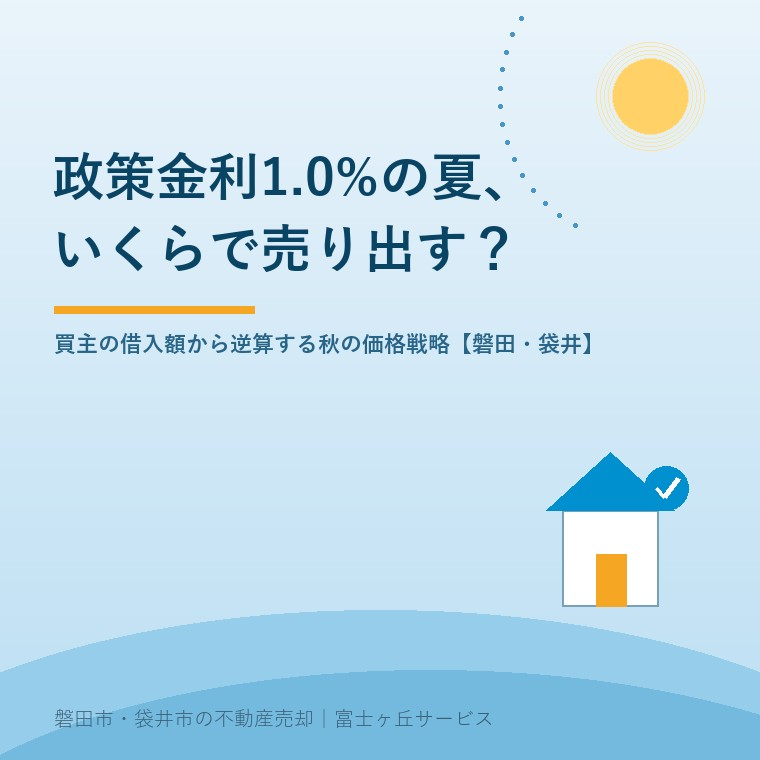

2026年8月12日｜カテゴリ：相場・売却実務／コスト・税・制度

この記事の要点
Q. 秋に実家を売り出そうと思っています。金利が上がったとニュースで見ましたが、売る側にも関係あるんでしょうか。
A. 大いにあります。金利は「買主がいくら借りられるか」を決め、それがそのまま「あなたの家にいくら出せるか」の上限になるからです。日本銀行は2026年6月16日、政策金利（無担保コールレート・オーバーナイト物）を0.75%程度から1.0%程度へ引き上げました。1995年以来、約31年ぶりの水準です。月々10万円・35年返済で借りられる額は、金利0.9%なら約3,600万円、2.0%なら約3,020万円、3.29%なら約2,490万円。同じ返済額でも1,100万円以上の差が出ます。だから秋の価格は、近所の売出価格を眺めて決めるのではなく、①ターゲットになる買主の月々の返済額を決める ②その金利で借りられる額を出す ③自己資金を足し、諸費用とリフォーム費を引くという順で逆算します。磐田市・袋井市では、介護施設の運営から不動産事業を始めた富士ヶ丘サービスのような地域密着の会社に相談するという選択肢があります。
「うちには関係のない話」と、多くの売主さんが思われます。ローンを組むのは買う人で、自分は売る側だから。
でも実務では逆です。売却で価格が決まる瞬間、そこにいるのは「月々いくらなら払えるか」を計算している買主です。その計算式の中に、金利という数字が入っている。だから金利は、売主にとって「自分の家に、いくらの値札がつけられるか」の話なのです。
この記事では、2026年8月12日時点の金利をもとに、秋の売り出し価格の考え方を整理します。
まず事実を並べます。
日本銀行は2026年6月16日の金融政策決定会合で、政策金利である無担保コールレート（オーバーナイト物）の誘導目標を、0.75%程度から1.0%程度へ0.25%引き上げることを決定しました。報道・調査機関の解説によれば、1.0%という水準は1995年以来、約31年ぶりです。
これが住宅ローンにどう伝わるか。民間の集計によると、2026年8月時点でおおむね次のような状況です。
| 種類 | 2026年8月の水準（民間集計・目安） |
|---|---|
| 変動金利（最優遇） | 主要銀行で年0.9%〜1.2%台。メガバンク平均は年1.0%台後半 |
| 10年固定 | メガバンクで年3.7%台 |
| 【フラット35】（買取型） | 年3.29%（前月比＋0.15%） |
| 短期プライムレート | みずほ銀行が2026年8月3日から2.125%→2.375%へ引き上げ |
短期プライムレートは、変動金利の土台になる金利です。ここが上がったということは、変動金利の基準金利も、この秋にかけて動くということ。既存の借り手への反映は銀行により異なりますが、2026年10月ごろの基準金利見直しを経て、実際の返済額に反映されるのは2027年1月以降という見方が一般的です。
売主として押さえるべきポイントは1つだけです。「これから買う人が使う金利は、去年より高い」。それだけ分かれば十分です。
ここが今日の本題です。買主は「3,000万円借りる」とは考えません。「月々10万円までなら払える」と考えます。だから、そこから逆算するのが正しい順番です。
下の表は、月々の返済額10万円・返済期間35年・元利均等返済・ボーナス返済なしで借りられる額の概算です。
| 適用金利（全期間同じと仮定） | 借りられる額の目安 | 0.9%との差 |
|---|---|---|
| 0.9%（変動・優遇の下限帯） | 約3,600万円 | ― |
| 1.0% | 約3,540万円 | ▲約60万円 |
| 1.2%（変動・優遇の上限帯） | 約3,430万円 | ▲約170万円 |
| 1.5% | 約3,270万円 | ▲約330万円 |
| 2.0% | 約3,020万円 | ▲約580万円 |
| 3.29%（フラット35・2026年8月） | 約2,490万円 | ▲約1,110万円 |
この表は、返済額に比例します。月8万円なら表の0.8倍、月12万円なら1.2倍で読んでください。月8万円・金利1.2%なら約2,740万円、月12万円・金利1.2%なら約4,110万円です。
いちばん見ていただきたいのは最下段です。同じ月10万円を払っても、変動0.9%で借りる人と、フラット35で借りる人とでは、買える金額が1,100万円違う。
つまり、「うちの実家を買える人」は、どの金利を使う人かで変わります。ここが、今年の秋の売り出しでいちばん効くポイントです。
借入額が出たら、そこから実際の「物件価格の上限」を組み立てます。
| 要素 | 内容 |
|---|---|
| ＋ 借入可能額 | 上の表で出した金額 |
| ＋ 自己資金 | 頭金・親からの援助・貯蓄 |
| − 諸費用 | 仲介手数料、登録免許税・司法書士報酬、不動産取得税、火災保険、ローン事務手数料など。中古戸建てで物件価格の6〜9%程度が目安 |
| − リフォーム費用 | 築古の実家では最大の変数。水回り一式・内装で数百万円になることも |
| ＝ 物件に出せる金額 | これがあなたの実家の「買主から見た天井」 |
築30年、40年の実家を売る場合、ここでリフォーム費用が効いてきます。買主の総予算が3,000万円でも、リフォームに500万円かかると読まれれば、物件に出せるのは2,300万円前後になります（諸費用も引くため）。
だからこそ、売主にできることがあります。「どこを直せばいくら」という見通しを、こちらから示すことです。電気も水道も止めた実家に、夏の一か月で起きることに書いたとおり、買主は分からない部分を大きめに見積もります。不明を減らせば、天井は上がります。
価格の次は時期です。8月は不動産の「二八（にっぱち）」で書いたとおり、8月は動きが鈍い月です。そして9月から、市場は動き出します。
| 時期 | やること |
|---|---|
| 8月中（お盆〜下旬） | 名義・境界・残置物の確認。査定と価格の方針決め。写真は草が枯れる前に撮る |
| 9月上旬 | 売り出し開始。秋の検討層が動き出すタイミングに合わせる |
| 9月下旬 | 都道府県地価調査（基準地価）の公表時期。地域の地価動向が話題になる |
| 10月〜11月 | 内覧の山場。反響が3週間ゼロなら価格を見直す |
| 11月〜12月 | 年内決済を目指す層との交渉。売主にとって譲渡所得の年をどちらにするかの分岐点 |
| 1月〜3月 | 年間最大の需要期。転勤・入学に合わせて動く層 |
9月に出して、決まらなければ年明けの最需要期まで持つ。これが今年の基本形だと考えています。理由は、金利がこの先も上がる可能性があるからです。日銀は、現在の金融環境はなお緩和的であるとして、経済・物価・金融情勢に応じて政策金利を引き上げていく方針を維持しています。
金利が上がるほど、買主の借入可能額は下がる。つまり、待てば高く売れるとは限らないのが、今の局面です。「もう少し様子を見よう」が、買主の予算を削っていく可能性がある。ここは、数年前とはっきり変わった点です。
売主側の税金の話です。譲渡所得は引渡しの年で課税年が決まるのが原則です（契約日基準を選べる場合もあります）。12月引渡しか1月引渡しかで、確定申告の年が1年ずれます。実家を売った翌年に来るお金で書いたとおり、売却の翌年には国民健康保険料や介護保険の負担にも影響が出ます。年末の引渡しは、この点も含めて決めてください。
金利は逆風ですが、税制には追い風があります。令和8年度税制改正で、住宅ローン減税が延長・拡充されました。国土交通省の公表内容によれば、要点は次のとおりです。
売主として知っておく意味はここです。買主が住宅ローン減税を使えるかどうかで、実質的な支払い負担が変わります。「この家は減税が使えるのか」を、買主は必ず調べます。
拡充の対象は省エネ性能の高い既存住宅ですから、築古の実家がそのまま該当するとは限りません。ただし、断熱改修を前提に買う層にとっては、判断材料になります。要件の詳細と、個別の物件が対象になるかどうかは、国土交通省の資料と税務署・税理士でご確認ください。
地元の実感を書きます。
磐田市・袋井市で中古戸建てを買う方の多くは、地元にお勤めのご家族です。製造業の工場、市内の事業所、市役所や病院。世帯年収は都市部ほど高くない代わりに、「今の家賃と比べてどうか」で判断される方が多いのが特徴です。
この地域の賃貸相場からすると、「月7〜9万円で買えるなら検討する」という層が厚い。先ほどの表に当てはめると、金利1.2%・35年でおよそ2,400万〜3,100万円の借入です。ここから諸費用とリフォーム費を引くと、物件価格の主戦場は2,000万円前後から2,600万円前後ということになります。
ここで大事なのが価格の「刻み」です。買主は物件サイトを「〜2,000万円」「〜2,500万円」「〜3,000万円」という区切りで検索します。2,550万円で出すと、2,500万円までで探している人の画面には出てきません。50万円の差で、見てもらえる人数が変わる。査定額のカラクリにも書きましたが、高い査定を出す会社より、検索の区切りを意識してくれる会社を選んでください。
もうひとつ。金利の影響を受けない買主もいます。土地として買う地元の方、隣地の方、そして買取業者です。築古で建物に価値が乗りにくい実家では、ローンを使う実需の買主と、現金の買主の両方に見せるのが正解です。指値（値引き交渉）が入ったときの構え方は値引き交渉のリアルに書きました。
当社は、磐田市見付で介護施設を運営するところから不動産の仕事を始めました。ご相談の入口は、たいてい「親が施設に入った」「親を看取った」です。
そういうご相談では、売り時を金利で決めることはありません。施設の費用、きょうだいの事情、相続の期限。優先すべきものが他にあるからです。
それでも、「どうせ売るなら、いくらで、いつ出すのがいいか」は、根拠を持って決めたい。その根拠が、この記事に書いた逆算です。買主が月々いくら払えて、いくら借りられて、いくら残るのか。そこから価格を出せば、値下げの回数が減ります。値下げが減れば、売れるまでの期間が短くなり、固定資産税も管理の手間も減ります。
目指しているのは「高く売る」ことだけではなく、「家族が困らない売却」です。売値ではなく手取りで考える実家の売却とあわせてお読みください。
価格の前に事実を整理する道具として、ふじがおか実家カルテを用意しています。
金利のニュースは、売主には他人事に見えます。でも、あなたの家を買う人の家計簿には、確実に書き込まれています。そこから逆算して値札をつける。それが、今年の秋のいちばん確かなやり方です。
ふじがおか実家カルテ｜秋の売り出し価格、逆算からご一緒します
近所の売出価格ではなく、買主の家計から決める。
住所をもとに、名義と相続登記、道路・境界、農地の有無、想定される買主層と価格帯を整理し、次に何を確認すべきかを1枚にしてお出しします。作成料0円・入力約1分。申込みだけで売却依頼にはなりません。
本記事は2026年8月12日時点で日本銀行・国土交通省が公表している情報、および同時点の民間集計による住宅ローン金利をもとにした一般的な解説であり、将来の金利水準や売却価格を保証するものではありません。本文中の借入可能額は、返済期間35年・元利均等返済・ボーナス返済なし・全期間同一金利という単純化した前提での概算であり、実際の借入可能額は金融機関の審査基準（返済負担率、審査金利、勤続年数、他の借入れ、団体信用生命保険の加入可否等）により決まります。変動金利は将来変動し、返済額が増加する可能性があります。諸費用の割合は物件・金融機関・地域により異なります。住宅ローン減税の適用要件・借入限度額・控除期間、省エネ性能の証明方法については国土交通省の公表資料および税務署・税理士へ、譲渡所得の課税年の判定や特例の適用可否は税理士・税務署へご確認ください。個別の売出価格の設定は物件の状態・立地・競合状況により異なります。個別のご相談は当社までどうぞ。
磐田市・袋井市の実家じまい・相続空き家相談
固定資産税通知書だけでも相談できます
住所があいまいでも、通知書や写真から名義・道路・農地・残置物の確認順を整理します。カルテ申込またはLINEで状況を送ってください。
富士ヶ丘サービス株式会社／静岡県磐田市見付5789番地1／TEL:0538-31-3308／静岡県知事 (2) 第14083号／代表取締役・宅地建物取引士 大石 浩之